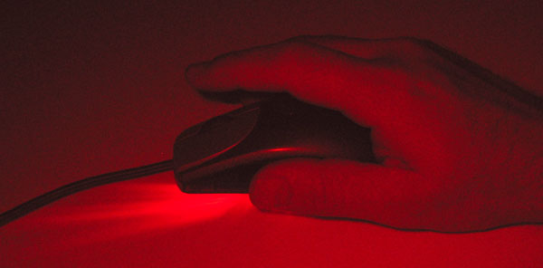

W podstawie takiej myszy zainstalowana jest jedna lub więcej diod elektroluminescencyjnych oświetlających powierzchnię pod myszą, soczewka ogniskująca oraz matryca CCD. Mysz tego typu posiada także specjalizowany procesor DSP służący do analizowania względnych zmian w położeniu mocno powiększonego obrazu powierzchni. Zaletą tego rozwiązania jest brak mechaniki, która łatwo ulega zanieczyszczeniu i wymaga częstej konserwacji oraz to, że mysz działa na prawie każdej powierzchni (oprócz szkła i lustra) i teoretycznie nie wymaga podkładki. Wadą tego typu urządzeń jest jednak wrażliwość na silne światło dzienne, które padając z boku może zakłócać pracę myszki.